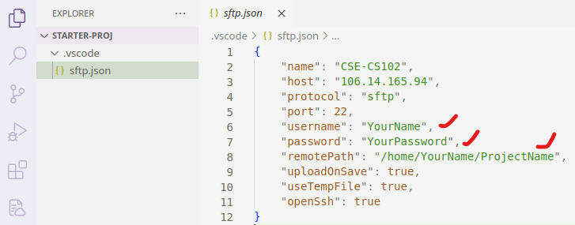

VS Code 远程开发工作流
使用命令行成功登录服务器后，说明你的计算机已经包含了 SSH 等工具。为了便于开发，可以使用流行的 VS Code 文本编辑器辅助编辑、同步项目代码。
以下内容默认你已经成功使用终端，登录过远程服务器。如果还没有尝试过，请返回上一节。
安装
前往官网下载安装 VS Code，接下来安装 SFTP 插件。在插件市场搜索 SFTP，选择安装 Natizyskunk 开发的 SFTP 插件，如图所示。

配置
安装完插件之后，可以使用本课程提供的初始项目 starter-proj.zip，该项目已设置好 VS Code 和 SFTP 配置框架。解压后使用 VS Code 打开 starter-proj 文件夹。在 .vscode 文件夹下，编辑 sftp.json 文件修改以下几个信息：
username：服务器用户名password：服务器密码remotePath：服务器上需要编辑的项目路径，例如/home/xuehao/cs102/lab0/

使用
⚠️注意
参照上一步配置的
remotePath，必须先在服务器上提前创建好这些目录，才能进行接下来的操作。
配置好后，点击 VS Code 菜单栏 Help 选择 Show All Commands，或直接按 F1 快捷键，在弹出的命令列表中搜索 SFTP。选择 "SFTP: Download Project"，随后选择默认保存位置，远程服务器中的项目将会自动下载到本地的初始项目文件夹中。

在本地编辑完文件并保存后，SFTP 插件会自动将更新后的文件同步到远程服务器。编译、测试、调试等任务，可以通过终端 Terminal 在远程服务器上进行。
⚠️注意
添加文件：如果之前没有创建任何项目文件，那么当你在本地或服务器中创建文件时，并不会自动同步。此时可以使用 "SFTP: Sync Remote -> Local" 或 "SFTP: Sync Local -> Remote" 手动同步。
删除文件：删除文件比较特殊，以上三条命令，对删除文件不起作用。如果有文件需要删除，必须在本地和服务器中分别手动删除。